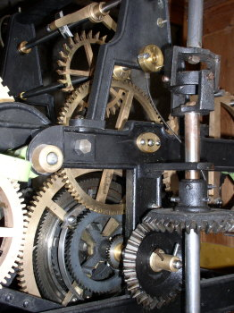

Kostel sv. Josefa v Janovicích u Frıdku - Místku (od roku 2000 národní kulturní památka) v sobì skrıvá mnoho pozoruhodností. Zajímavı je i jeho "technickı" inventáø. S varhanami se mùete velmi podrobnì seznámit v sekci "varhany - Janovice". Další zajímavostí jsou hodiny. V roce 2000 byla provedena jejich generální oprava. Hodiny byly poøízeny do nového kostela a témìø po deseti letech jeho existence v roce 1899. Od té doby slouily prakticky nepøetritì a do roku 1999, a se sto let po svém vzniku nadlouho zastavily. Pøíèin bylo nìkolik, pøedevším zchátralost rozvodu a cifernikovıch pøevodovek. Samotnı stroj byl v pomìrnì dobrém stavu, poslední vìtší opravu prodìlal cca o deset let døíve. I na nìm se však našlo nìkolik menších závad. Stojící hodiny budily v obci znaènou pozornost, na jejich zprovoznìní mìl zájem i obecní úøad, kterı nakonec celou opravu financoval z prostøedkù získanıch z veøejné sbírky. Zvaováno bylo nìkolik variant, jednou z nich bylo i poøízení nového, elektronického, rádiovım signálem øízeného hodinového stroje. Proti tomu, aby byl krásnı starı stroj nahrazen jsme ale silnì protestovali. Nakonec se nám podaøilo všechny zainteresované pøesvìdèit a starı stroj opravit a doplnit o elektrickı nátah. Vìí se tak i nadále rozléhá krásné pravidelné klapání krokového kola, i tady je pøíjemné jen tak pobıt a poslouchat, jak plyne èas... |
 |
Takto to vypadá ve vìi. Vıška vìe je 55m, ciferníky jsou ve vıšce cca 30m, hodinovı stroj ještì o 15m níe. Otáèivı pohyb se od stroje na ciferníky pøevádí rozvodem z tyèí, které jsou pohyblivì spojeny kardanovımi klouby. V úrovni ciferníkù se rozvod pomocí rozvodky rozdìlí na ètyøi strany (viz dále) a v kadém ciferníku s pomocí pøevodovky 1:12 otáèí ruèièkami. Ty jsou dlouhé 70 a 100cm a mají protizávaí na vnitøní stranì (u pøevodovky). Stav rozvodu byl špatnı. Velmi opotøebované byly pøedevším klouby, nìkteré mìly prasklı støední litinovı kruh a chybìjící èepy. Velké vùle pak znemoòovaly pøesnı chod a vadné klouby zpùsobovaly zasekávání hodin. V roce 1971 pøi vımìnì zvonové stolice a elektrifikaci zvonìní byl celı rozvod navíc dost necitlivì posunut aby nepøekáel zvonùm. Ztratil tak stabilitu a aby se nerozpadal, byl rùznì zadrátován (viz obrázek rozvodky dále).
|
Celı rozvod jsme renovovali,
doplnili do nìj další kloub tak, aby mohl bıt fixován na zvonovou stolici
a nemìl zbyteènì velké vùle. Všechy klouby byly opraveny, vymìnìny støedové
kruhy i otoèné èepy. Renovovány byly i ciferníkové pøevodovky, obnovena
byla pouzdra a pohyblivá uloení a pøedevším bylo zmìnìno zavìšení pøevodovek
v cifernících (viz dále). Ruèièky dostaly novı nátìr. |
|
Hodinovı stroj Vırobek firmy Rich. Liebing z Vídnì je nádhernou ukázkou vıborného øemeslného zpracování. Pro pøedstavu o mìøítcích - širokı je asi jeden metr. Skládá se ze tøí samostatnıch èástí, uprostøed je vlastní hodinovı stroj, na krajích pak dva stroje pro ètvrové a hodinové cimbálové odbíjení (s aerodynamickou brzdou ve formì zelenıch lopatek). Kadá èást má svùj buben, na kterém bylo navinuto lanko se zavìšenım závaím (hmotnost závaí se pohybovala mezi 30 a 45kg). Stroj šel na jedno nataení pøesnì 24 hodin, dennì tedy musel nìkdo ve stejnou hodinu vyšlapat 74 schodù ve vìi a k hodinám a tyto natáhnout. V popøedí je pak vidìt jeden z kardanovıch kloubù a vıstupní tyè vedoucí nahoru k ciferníkùm, kyvadlo je zavìšeno vzadu.  Pøi elektrifikaci zvonìní bylo odbíjení zrušeno, z hodin byly demontovány èásti, které odbíjení spouštìly. Bohuel se nezachovaly. Pøi opravách hodin byla v minulosti taky nahrazena loiska kyvadla a krokového kola (jsou vidìt na nástavci nad strojem pod orientaèním ciferníèkem) a poškozeno jedno koleèko, pohánìjící orientaèní ciferníèek. Proto byl asi demontován i jeho náhon, kterı se rovnì nezachoval. Bylo jej tedy nutné vyrobit novì. |
|
Pohled na stroj zezadu, v popøedí kyvadlo (jeho závaí je pod úrovní podlahy), za ním na øetìzu hlavní a pomocné závaí. Stroj byl doplnìn o elektrickı nátah, závaí bylo zavìšeno do skøínì (døíve viselo na lanku a kladkách v prostoru vìe a mìlo zdvih asi 5m, nyní se pohybuje na dráze desetkrát menší). Snaili jsme se o to, abychom zachovali co nejvíce z historické hodnoty hodinového stroje (i kdy ti pøed námi mu dali dost zabrat) a všechny zmìny mìly vratnı charakter. Jediná úprava tedy spoèívala ve vsazení ozubeného vìnce (øetìzového kola) do døevìného bubnu, na kterém bylo døíve navinuto lanko se závaím. Všechny ostatní souèásti jsou na samostatném nosném rámu ve skøíni hodin a jsou kdykoliv demontovatelné.
|
Dvì závaí na nekoneèném øetìzu
zajišují vlastní chod hodin (pomocné závaí napíná øetìz, obì visí na
øetìzovıch kladkách) a pohybují se mezi dvojicí koncovıch spínaèù (ve
skuteènosti je to trochu sloitìjší, pohyb hlídají ještì další bezpeènostní
spínaèe, zabraòující poškození hodin napø. pøi selhání vypnutí motoru).
Na jedno nataení jdou hodiny asi 90 minut, samo nataení pak trvá 5 minut. |
| Pohled na pohon nátahu. Je pouit asynchronní pøevodovı motorek J86RR412, vırobek ATASu elektromotory v Náchodì. Motorek má pøevodovku 1:540, otáèí se rychlostí 1,5 ot/min a zvednout 40 kg závaí je pro nìj hraèka. V detailu jsou dobøe viditelné všechny komponenty nátahu - øetìzové kolo na bubnu hodin, øetìz a rozeta na motoru. Ovládání je v samostatném rozvádìèi vnì skøínì hodin. |
 |
|
Rozvodka. Otáèivı pohyb tyèe rozvodu se v patøe ciferníkù rozvádí na všechny ètyøi strany vìe. Tady je zahycena rozvodka ještì pøed opravou, je vidìt pøidrátovaná spojka svislého rozvodu. Ten byl nestabilní a pøi jeho pohybu docházelo k vypadávání vidlice svislé tyèe, proto byl takto svázán drátem. Zvláštností této rozvodky je pouití pìtice stejnıch kol, aby se na obvod vodorovného koleèka vešly ètyøi stejnì velké, musí bıt jejich osy mírnì sklonìny. Jiní vırobci pouívají postranní kola menší, pøíslušnı pøevod pak není 1:1 a musí bıt kompenzován opaènım pøevodem v náhonu rozvodu u hodinového stroje. |
 |
|
|
Pøevodovky 1:12 Pøevodovky zprostøedkovávají pøenos otáèivého pohybu tyèe rozvodu na ruèièky v cifernících. Tyè se otoèí 1x za hodinu, pohání tedy pøímo velkou ruèièku. Na malou ruèièku se pohyb pøevádí dvojicí dvojitıch ozubenıch kol s pomìrem poètu zubù 1:12, tedy právì tolik, aby se malá ruèièka otoèila jednou za 12 hodin. Souèástí pøevodovek jsou i protizávaí ruèièek (kulatá). Vıstupní dvojitá høídel pak prochází pøes metrovou zeï ven k ciferníkùm a ruèièkám. Obrázky srovnávají stav pøevodovek pøed opravou a po ní. Kromì renovace vlastní pøevodovky bylo zmìnìno i jejich zavìšení na zeï. Hmodinky døíve nebyly a tak bylo k upevnìní pouito dvojice lomenıch høebù, zatluèenıch do spár mezi cihly. Toto upevnìní se po èase uvolnilo, nìkde dokonce zpùsobilo prasknutí zdiva. Pøevodovky byly rùznì pøidrátovány ke kramlím v trámech nad nimi a èásteènì se pohybovaly, co zpùsobovalo další problémy v náhonu (drhnutí v prùchodu zdí èi v ciferníku). Po opravì byly pøevodovky fixovány na ocelovı rám, ukotvenı jednak do zdiva, jednak do trámu stropu. |
|
 |
Detail pøevodovky, jejího uchycení
a kloubu náhonu. Dobøe viditelné jsou i nové souèásti upevòovacího rámu,
støedové kruhy kardanového kloubu, èepy i pouzdra... |
| Demontá ruèièek byla pomìrnì obtínou záleitostí. Centrální matici šlo i po sto letech povolit pomìrnì snadno, staení ruèièek z høídelí však bylo moné a pomocí stahováku a speciálního pøípravku. Pøístup k ruèièkám byl také pomìrnì obtínı, v ciferníku je jen malièké 30x30 cm velké okénko, ke kterému navíc z druhé strany vede jen o málo vìtší "tunel" pøes stovku zeï (viz pøedchozí obrázky pøevodovek). Manipulace s nástroji se tak promìnila v malé akrobatické vystoupení. Ruèièky samotné byly zkorodovány jen místnì a staèilo na nich obnovit nátìry. Matice a šrouby byly vìtšinou po opravì pouity pùvodní (nebylo je moné bez úprav nahradit, nebo nemìly normalizované metrické závity). |
 |
|
DCF hodiny. Pro Vaše srovnání - takto vypadá elektrickı hodinovı stroj, øízenı rádiovım signálem (DCF z Frankfurtu). Má tøi èásti - øídicí elektroniku, pøijímaè rádiového signálu a elektromotor s pøevodovkou a èidlem polohy pro pohon ruèièek. Na pohled velmi jednoduché, kompaktní a moderní. Ale ve srovnání s klasickım stoletım strojem na pøedchozích snímcích bez jakékoliv elegance. Vzhledem k mé profesi mne nikdo nemùe podezírat, e jsem proti novım technologiím, kdy je stále prosazujido praxe. Proto jen kratièké vysvìtlení proè jsme byli proti øešení, které nabízelo vımìnu hodin za tyto elektrické. Staré hodiny šly v Janovicích sto let. Vykazovaly a na pár vyjímek jen vady, které šly na vrub bìnému opotøebení. Vdy velká ruèièka za tu dobu obìhla ciferník 876 tisíckrát, poèet kyvù kyvadla se pøehoupl pøes 1,5 miliardy! Bylo by škoda vyhodit takovı krásnı kus historie jen proto, e se èasem unavil. Vdy k nìmu za ta léta musel dennì nìkdo chodit, dennì je natahovat a seøizovat. Za tìch sto let to je 36,5 tisíce návštìv, pøi kterıch musel nìkdo vyšlapat 2.701.000 schodù nahoru a stejnı poèet dolù. I po sto letech jsou hodiny technicky na vıši, stejnı princip mechanického kroku pouívají všechny dodnes vyrábìné mechanické hodiny. Novı stroj by se ale sta let bez úprav nedoil. Fyzická ivotnost pouité elektroniky (jednoèipovı mikropoèítaè, pamìti EPROM...) je maximálnì dvì desítky let, morální ještì ménì. (Teï nepomlouvám tento moderní vırobek, jeho nasazení v novıch stavbách a jako náhrada za znièené stroje je dnes jedno z monıch øešení a pøináší i mnoho vıhod, které jiné hodiny pøinést nemohou - záruku pøesného chodu, automatické pøestavování letní/zimní èas apod.).
Hodiny po opravì jsou pomìrnì pøesné, nesplnila se naše obava z moného nepravidelného chodu. Pøedpokládali jsme, e pøi kadodenním natahování bylo nutné dennì hodiny seøídit. Po nainstalování elektrického nátahu však hodiny šly prakticky dva mìsíce pøesnì i bez seøizování, co je na staletı stroj parádní vıkon, svìdèící o precizním provedení mechanismu. A potvrzuje to i správnost našeho rozhodnutí zachovat tento stroj dalším generacím. |
A na závìr ještì alespoò seznam tìch, kdo se na opravì hodin podíleli: Komponenty nátahu, rozvádìè s øídící elektronikou a mechanické díly vyrobil Zdenìk Kubala. Renovaci pøevodovek, opravu rozvodu a vìtšinu montáních prací provedl Jan Kozel, ruèièky natøela Petra Kozlová, skøíò hodin renovoval Stanislav Kadìra, pomáhali Marek Václavík, Ing. Pavel Bernat, Marta Bernatová, a další. Organizaci opravy, projekt úprav, zkonstruování nátahu, elektroinstalaci a montáe zajistil Ing. Petr Bernat. (rok 2000) |